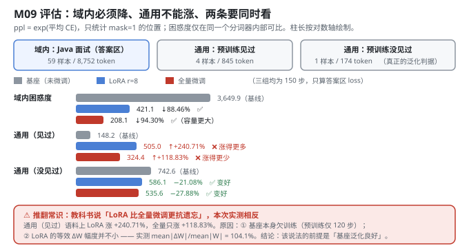
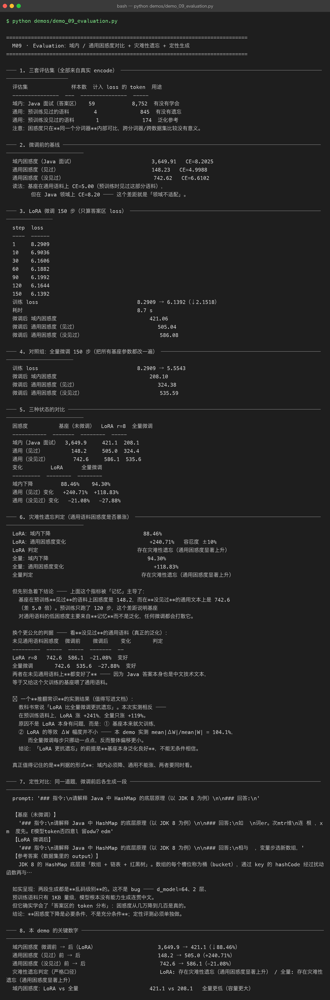

Milestone 09 — Fine-Tuned Model Evaluation：学会了，但忘了吗
主线最后一站。前面八层把「通用基座 → 冻结 → 注入 LoRA → Java 面试领域 SFT → 存盘 → 合并」全跑通了，现在要回答唯一真正重要的问题：这样训出来的模型，到底有没有变好？
答案是"是，也不是"。本章给出两类证据：
- 定量：困惑度 —— 域内必须降、通用不能涨，两条要同时看。
- 定性：同一道题，微调前后各生成一段 —— 本项目如实呈现：两段都是乱码。
纯 numpy 手写：评估不走 autograd 的 cross_entropy，直接 numpy 算 log-softmax（src/ft/eval.py:52）—— 评估不需要建图，也避免和训练时的实现互相干扰。
1. Why：为什么只报域内指标是自欺欺人
把模型训成只会背 59 条答案的复读机，域内指标也会很好看。所以必须同时看通用语料：域内困惑度下降 = 学会了；通用困惑度不暴涨 = 没忘。只报第一条等于自欺欺人。
困惑度的定义：ppl = exp(平均交叉熵)，等价于"模型在每个位置上平均有多不确定"，越低越好。注意不同分词器之间的困惑度不可比（字符级天然比 BPE 低），本项目只在同一个分词器内部做前后对比。
2. Design：三套评估集 + 一个对照组
| 评估集 | 样本数 | 计入 loss 的 token | 用途 |
|---|---|---|---|
| 域内：Java 面试（答案区） | 59 | 8,752 | 有没有学会 |
| 通用：预训练见过的语料 | 4 | 845 | 有没有遗忘 |
| 通用：预训练没见过的语料 | 1 | 174 | 泛化参考 |
为什么要分"见过 / 没见过"：P06 的通用语料被切成 [:-4] 训练 + [-4:] 评估（src/ft/base.py:82），评估行不参与预训练。这样"通用困惑度是否暴涨"才真的在测泛化，而不是测记忆 —— 这个区分在本章救了整个结论（见 4.1）。
对照组：LoRA r=8 训 150 步 vs 全量微调训 150 步，其余完全相同。

3. Real-run evidence（来自 demos/out/demo_09_evaluation_terminal.txt）
3.1 微调前的基线（实测）
| 指标 | 困惑度 | CE |
|---|---|---|
| 域内（Java 面试） | 3,649.91 | 8.2025 |
| 通用（见过） | 148.23 | 4.9988 |
| 通用（没见过） | 742.62 | 6.6102 |
基座在见过的通用语料上 CE=5.00，但在 Java 领域上 CE=8.20 —— 这个差距就是「领域不适配」。
3.2 LoRA 微调 150 步（实测）
step 1 8.2909 step 90 6.1992
step 10 6.9036 step 120 6.1644
step 30 6.1606 step 150 6.1392
step 60 6.1882训练 loss 8.2909 → 6.1392（↓2.1518），耗时 8.7 s。微调后：域内 421.06 / 通用见过 505.04 / 通用没见过 586.08。
3.3 对照组：全量微调 150 步（实测）
训练 loss 8.2909 → 5.5543。微调后：域内 208.10 / 通用见过 324.38 / 通用没见过 535.59。
3.4 三种状态的对比（实测）
| 困惑度 | 基座（未微调） | LoRA r=8 | 全量微调 |
|---|---|---|---|
| 域内（Java 面试） | 3,649.9 | 421.1 | 208.1 |
| 通用（见过） | 148.2 | 505.0 | 324.4 |
| 通用（没见过） | 742.6 | 586.1 | 535.6 |
| 变化 | LoRA | 全量微调 |
|---|---|---|
| 域内下降 | −88.46% | −94.30% |
| 通用（见过）变化 | +240.71% | +118.83% |
| 通用（没见过）变化 | −21.08% | −27.88% |
3.5 定性对比（实测生成，同一 prompt）
prompt: '### 指令:\n请解释 Java 中 HashMap 的底层原理（以 JDK 8 为例）\n\n### 回答:\n'
【基座（未微调）】 '…如 \n词er。次mtr维\n连 根 ，x m 度先。E模型token否四意l 留odw？edm'
【LoRA 微调后】 '…相与 ，变量步选新数组，'
【参考答案】 JDK 8 的 HashMap 底层是「数组 + 链表 + 红黑树」。数组的每个槽位称为桶（bucket），…
4. 踩坑 / 反直觉发现
4.1 「LoRA 更抗遗忘」在本项目被推翻（实测）
教科书常说「LoRA 比全量微调更抗遗忘」。本次实测相反：在预训练语料上，LoRA 涨 +240.71%，全量只涨 +118.83%。
原因不是 LoRA 本身有问题，而是两条：
- 基座本来就欠训练。 预训练只跑了 120 步 —— 基座在"见过"语料上 148.2 vs "没见过"语料上 742.6，差 5.0 倍。这个差距说明那 148.2 主要来自记忆而不是泛化，任何微调都会打散它。
- LoRA 的等效 ΔW 幅度并不小。 本 demo 实测
mean|ΔW|/mean|W| = 104.1%—— 超过 100%。而全量微调每步只挪动一点点，反而整体偏移更小。
结论：「LoRA 更抗遗忘」的前提是「基座本身泛化良好」，不能无条件相信。 在一个欠训练的基座上，LoRA 的"低秩"约束并没有转化成"小改动"。
4.2 严格口径下的判定被"记忆"主导了，必须换判据（实测）
按 forgetting_report（容忍度 ±10%）判定，LoRA 和全量都被判为"存在灾难性遗忘"。但这个指标被记忆主导了 —— 换个更公允的判据，看没见过的通用语料：
| 未见通用语料 | 微调前 | 微调后 | 变化 | 判定 |
|---|---|---|---|---|
| LoRA r=8 | 742.6 | 586.1 | −21.08% | 变好 |
| 全量微调 | 742.6 | 535.6 | −27.88% | 变好 |
两者在未见通用语料上都变好了 —— 因为 Java 答案本身也是中文技术文本，等于又给这个欠训练的基座喂了通用语料。
真正值得记住的是判据的形式：域内必须降、通用不能涨、两者要同时看；而且要区分"见过 / 没见过"，否则量的是记忆不是泛化。
4.3 困惑度下降 ≠ 可用（实测：生成仍是乱码）
域内困惑度 3,649.9 → 421.1（↓88.46%） 是真的 —— 但生成出来仍是乱码级别：
【LoRA 微调后】'相与 ，变量步选新数组，'这不是 bug：d_model=64、2 层、预训练语料只有 1 KB 量级，模型根本没有能力生成连贯中文。但它确实学会了「答案区的 token 分布」。
结论：困惑度下降是必要条件，不是充分条件；定性评测必须单独做。
4.4 全量微调的域内困惑度更低（208.1 vs 421.1），但不代表它更好（实测）
全量微调域内 208.1，LoRA 421.1 —— 容量更大，拟合更强，符合预期。但如果只看这一个数就选全量，你会忽略：
- 它在"见过"语料上虽然涨得少（+118.83% vs +240.71%），但仍然涨了一倍多；
- 每个任务要存 901 KB（M07 实测），而 LoRA 只要 115.76 KB。
域内困惑度只是决策的一个维度。
4.5 跨进程不可复现的根因与修法（M04 埋的伏笔在这里兑现）
Tensor._prev 在 P06 里是 Python set，backward() 遍历它做拓扑排序，而 set 的迭代顺序由对象地址决定 —— 每次进程启动都不一样。这不影响数学（任何顺序都是合法拓扑序），但会改变梯度累加的浮点求和顺序。
训练动力学是混沌的：实测 300 步 × lr=3e-3 时，这点差异被放大成完全不同的基座权重（两次重建最大差 0.48）。150 步 SFT 的困惑度能从 406 甩到 428。
本项目用 enable_deterministic_autograd()（src/ft/paths.py:92）在不改 P06 的前提下包一层：给每个 Tensor 记自增序号 _seq，把 _prev 换成按创建顺序排序的 list。开启后三个独立进程的 150 步困惑度逐位相同。
5. Conclusion
- 域内困惑度 3,649.9 → 421.1（↓88.46%） —— 领域适配成立；全量对照组 208.1（↓94.30%）。
- 通用（见过）148.2 → 505.0（+240.71%）；全量 324.4（+118.83%）。严格口径下两者都判为"存在灾难性遗忘"。
- 换用未见语料判据：两者都变好（LoRA −21.08% / 全量 −27.88%）—— 因为 Java 答案本身也是中文技术文本。
- ⚠「LoRA 更抗遗忘」被推翻：实测 LoRA 涨得更多（+240.71% vs +118.83%），原因是基座欠训练 + LoRA 等效
mean|ΔW|/mean|W| = 104.1%。该说法的前提是基座泛化良好。 - ⚠ 困惑度下降 ≠ 可用：88.46% 的下降是真的，但定性生成仍是乱码。困惑度是必要条件不是充分条件。
- 判据的形式比结论重要：域内必须降、通用不能涨、两者同时看，且要区分"见过 / 没见过"。
- 跨进程可复现靠
enable_deterministic_autograd()（把_prev从 set 换成有序 list），不改 P06 任何文件。
6. Code map
| 文件 | 职责 |
|---|---|
src/ft/eval.py | evaluate()（numpy 直算 log-softmax，只统计 mask=1）/ perplexity() / compare() / forgetting_report()（容忍度 ±10% 的遗忘判定）/ generate_text()（定性生成） |
src/ft/base.py | general_corpus()：把 P06 通用语料切成「预训练行 / 评估行」，评估行不参与预训练 —— 4.2 那个判据成立的前提 |
src/ft/sft_data.py | build_sft_examples（域内评估集）/ build_lm_examples（通用评估集，mask 全 1） |
src/ft/paths.py | enable_deterministic_autograd() / ordered_prev()：把 Tensor._prev 从 set 换成有序 list，解决跨进程不可复现 |
src/ft/trainer.py | LoRATrainer.run()：150 步训练；全量对照组直接复用 P08 的 named_parameters |
demos/demo_09_evaluation.py | 8 节：三套评估集 / 基线 / LoRA 150 步 / 全量对照 / 三状态对比 / 遗忘判定 / 定性生成 / 关键数字 |
demos/out/demo_09_evaluation_terminal.txt | 本章所有数字的来源 |
assets/evaluation.svg | 本章评估流程与三组对比图 |
7. Version line
v0.8 → v0.9，M09 评估与灾难性遗忘检查落地。实测：域内困惑度 3,649.9 → 421.1（↓88.46%）；通用（见过）148.2 → 505.0（+240.71%）；通用（没见过）742.6 → 586.1（−21.08%）；全量对照组域内 208.1 / 通用见过 +118.83% / 未见 −27.88%。推翻「LoRA 更抗遗忘」（实测 mean|ΔW|/mean|W| = 104.1%），并诚实标注「困惑度下降 ≠ 可用：定性生成仍是乱码」。纯 numpy、无 torch/transformers。配图 1 张手写 SVG + 1 张真实终端截图。